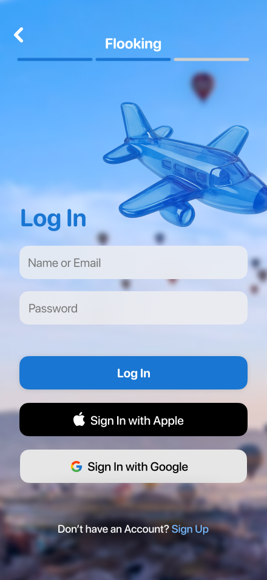
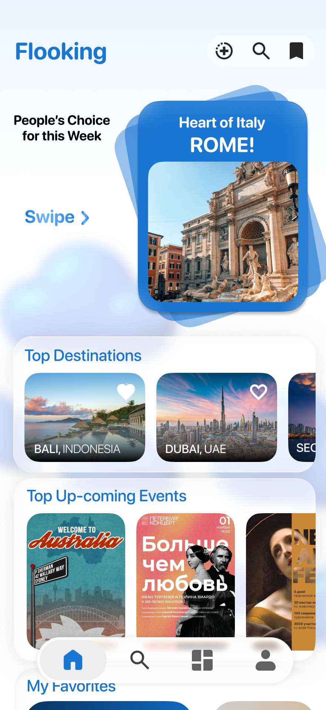
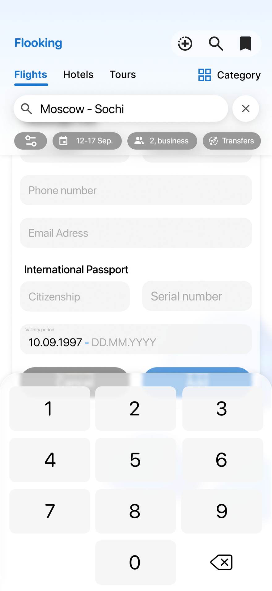
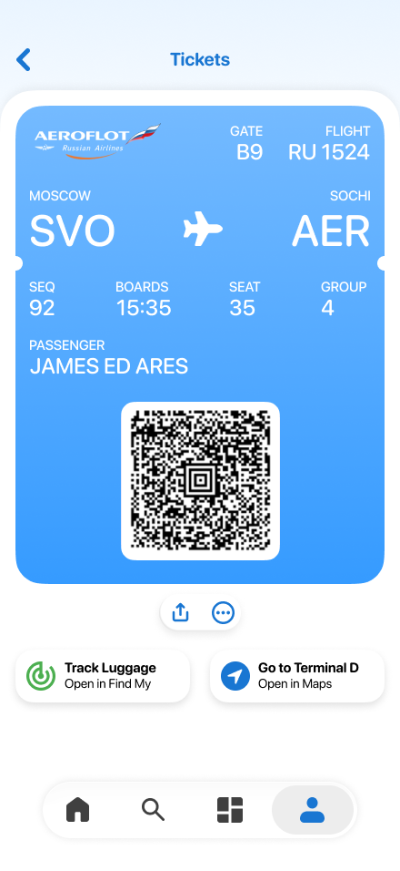

Flooking.
The whole trip – flights, hotels, tours, boarding passes – in a single flow.



Three anchor points: sign-in · first impression · the trip’s main artefact



Five real concept screens from ~50 mockups: onboarding, sign-in, destination picks, flight search with passport, and boarding pass.
A trip is smeared across 4–5 apps. The value is not “another search” but the integrity of the flow.
A design hypothesis; no user research was conducted – validation methods are at the end of the case.
The query reads as one line: Moscow–Sochi · 12–17 Sep · 2, business · transfers
Ticket as a wallet card
The trip’s main artefact one tap away – not a row in an order list.
Departure day is part of the flow
Find My (luggage with an AirTag tracker) and a route to the terminal – right from the ticket screen.
Native to iOS
System typography and patterns – a native feel without exotics.
Search and checkout
A coverage diagram of the flow, not analytics data
An integral flow reduces drop-off
Validation: step-by-step funnel
The wallet brings users back
Validation: retention on travel dates
A profile speeds up rebooking
Validation: checkout time
~50 layouts covering the full user journey in 2 months, solo. The concept’s strength is in the designed seams between services.
Next: an interactive prototype of the key flow and a hallway test of the onboarding.